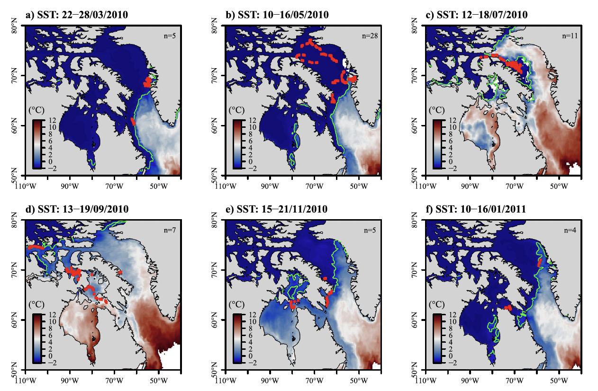
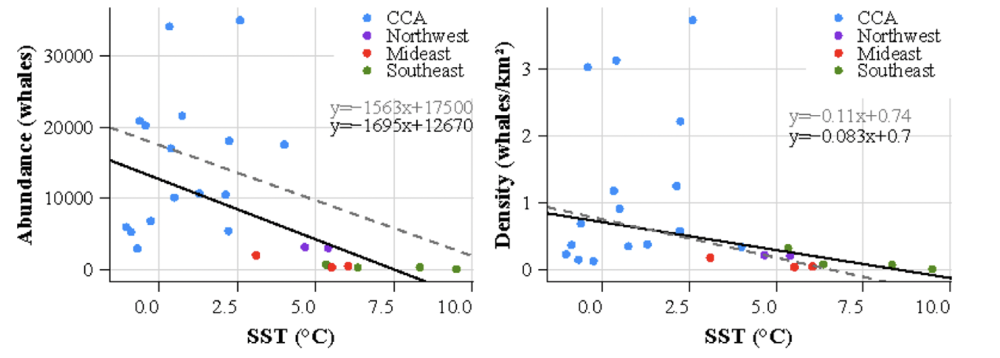
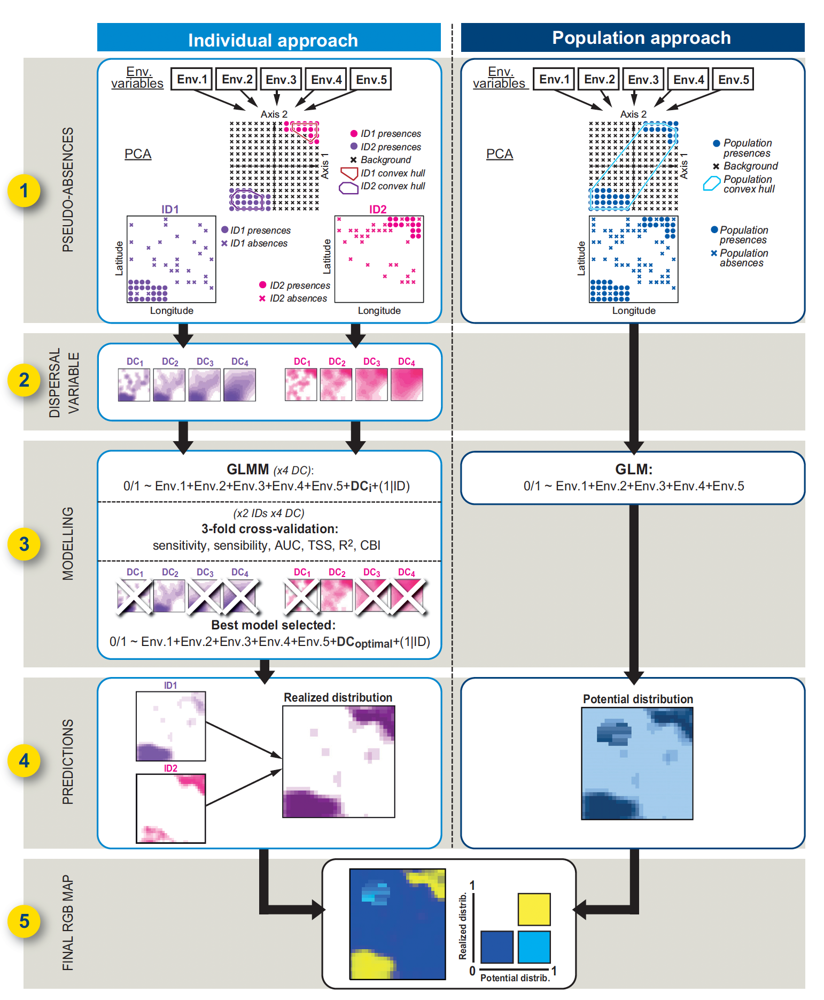
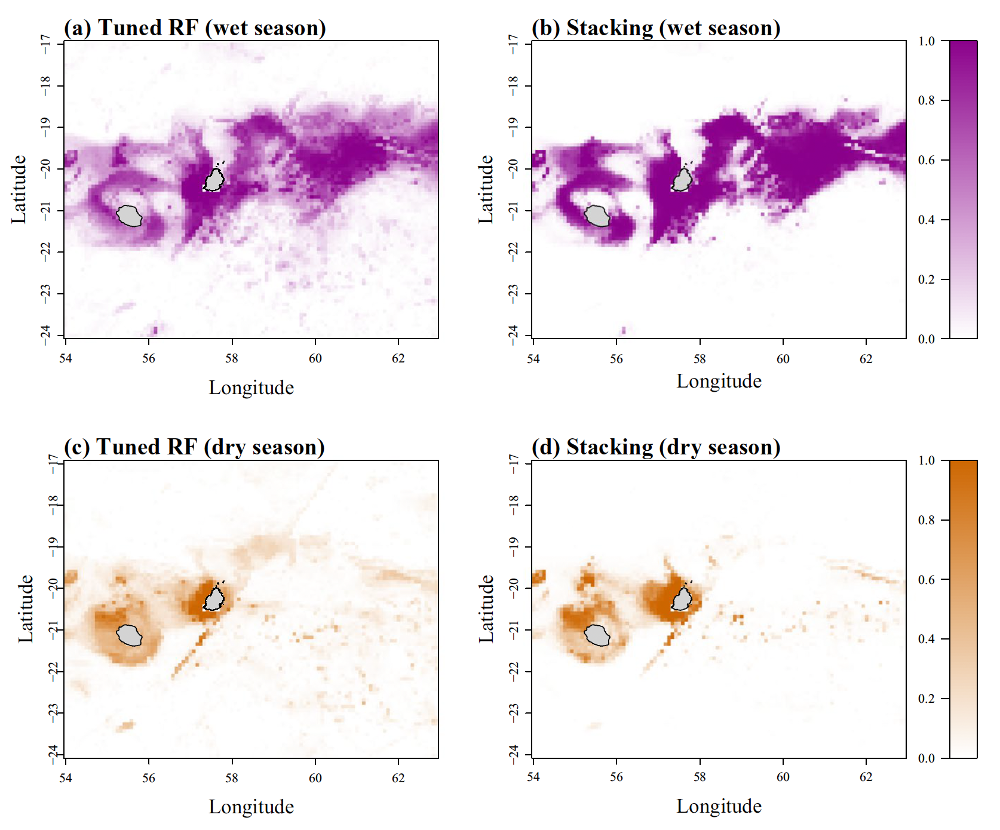

Research
Influence of global warming on Arctic cetaceans
The satellite tracking of 98 bowhead whales over an 11-year period (2001–2011) in Baffin Bay - West Greenland enabled to investigate the environmental drivers (specifically sea surface temperature and sea ice) involved in bowhead whale’s movements. Movement patterns differed seasonally, with aggregations of whales found at higher latitudes during spring and summer likely in response to sea ice retreat and increasing sea temperature (SST) facilitated by the warm West Greenland Current. In contrast, the whales moved further south in response to sea temperature decrease during autumn and winter. Statistical models indicated that the whales targeted a narrow range of SSTs from −0.5 to 2°C. Sea surface temperatures are predicted to undergo a marked increase in the Arctic, which could expose bowhead whales to both thermal stress and altered stratification and vertical transport of water masses.

Not only the distribution of Arctic cetaceans is expected to be impacted by climate change, but we also we assume that the population dynamics of narwhals are partly influenced by changes in environmental conditions, with warm areas of increasing sea temperatures having lower abundance of narwhals. Using a unique large dataset of 144 satellite tracked narwhals, sea surface temperature (SST) data spanning 25 years (1993–2018) and narwhal abundance estimates from 17 localities, we (1) assessed the thermal exposure of this species, (2) investigated the SST trends at the summer foraging grounds, and (3) assessed the relationship between SST and abundance of narwhals. We showed a sharp SST increase in Northwest, Mideast and Southeast Greenland, whereas no change could be detected in the Canadian Arctic Archipelago (CAA) and in the Greenland Sea. The rising sea temperatures were correlated with the smallest narwhal abundance observed in the Mideast and Southeast Greenland (< 2000 individuals), where the mean summer sea temperatures were the highest (6.3 °C) compared to the cold waters of the CAA (0.7 °C) that were associated with the largest narwhal populations (> 40,000 individuals).

Predicting marine megafauna distribution from satellite tracking
A methodological framework to predict the individual and population-level distributions from tracking data
By running classical SDMs (population approach) with mixed models including a random factor to account for the variability attributable to individual (individual approach), we propose an innovative five-steps framework to predict the potential and individual-level distributions of mobile species using GPS data collected from green turtles. Pseudo-absences were randomly generated following an environmentally-stratified procedure. A negative exponential dispersal kernel was incorporated into the individual model to account for spatial fidelity, while five environmental variables derived from high-resolution Lidar and hyperspectral data were used as predictors of the species distribution in generalized linear models. Both approaches showed a strong predictive power (mean: AUC > 0.93, CBI > 0.88) and goodness-of-fit (0.6 < adjusted R2 < 0.9), but differed geographically with favorable habitats restricted around the tagging locations for the individual approach whereas favorable habitats from the population approach were more widespread. Our innovative way to combine predictions from both approaches into a single map provides a unique scientific baseline to support conservation planning and management of many taxa. Our framework is easy to implement and brings new opportunities to exploit existing tracking dataset, while addressing key ecological questions such as inter-individual plasticity and social interactions.

Predicting the spatial distribution of sperm whales using machine learning
Our study (a) investigated the seasonal movements, (b) predicted the potential distribution, and (c) assessed the diel vertical behavior of this species in the Mascarene Archipelago in the south-west Indian Ocean. Using 21 satellite tracks of sperm whales and eight environmental predictors, 14 supervised machine learning algorithms were tested and compared to predict the whales’ potential distribution during the wet and dry season, separately. The best performing algorithm was the random forest, showing a strong affinity of the whales for sea surface height during the wet season and for bottom temperature during the dry season. A more dispersed distribution was predicted during the wet season, whereas a more restricted distribution to Mauritius and Reunion waters was found during the dry season, probably related to the breeding period. The results of our study fill a knowledge gap regarding seasonal movements and habitat affinities of this vulnerable species, for which a regional IUCN assessment is still missing in the Indian Ocean. Our findings also confirm the great potential of machine learning algorithms in conservation planning and provide highly reproductible tools to support dynamic ocean management.
